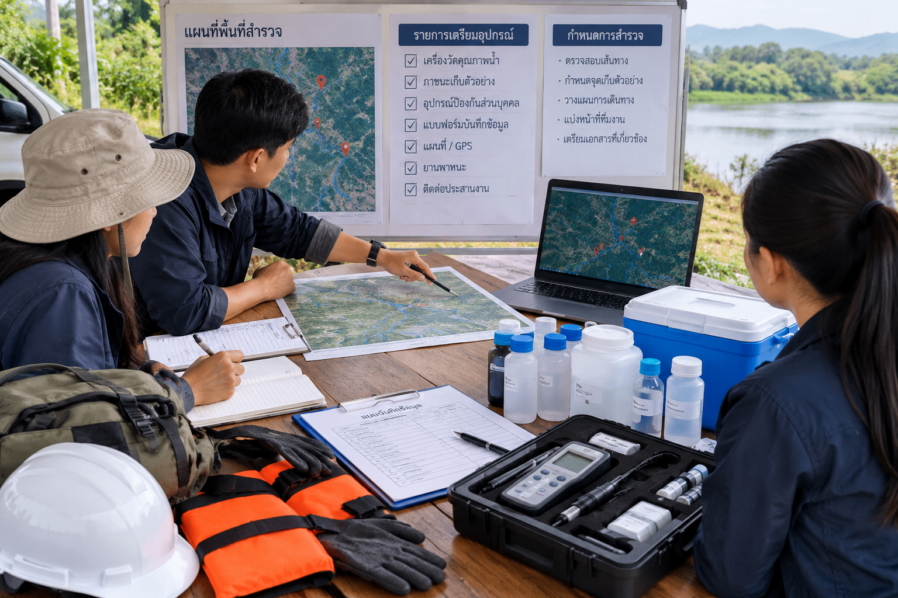
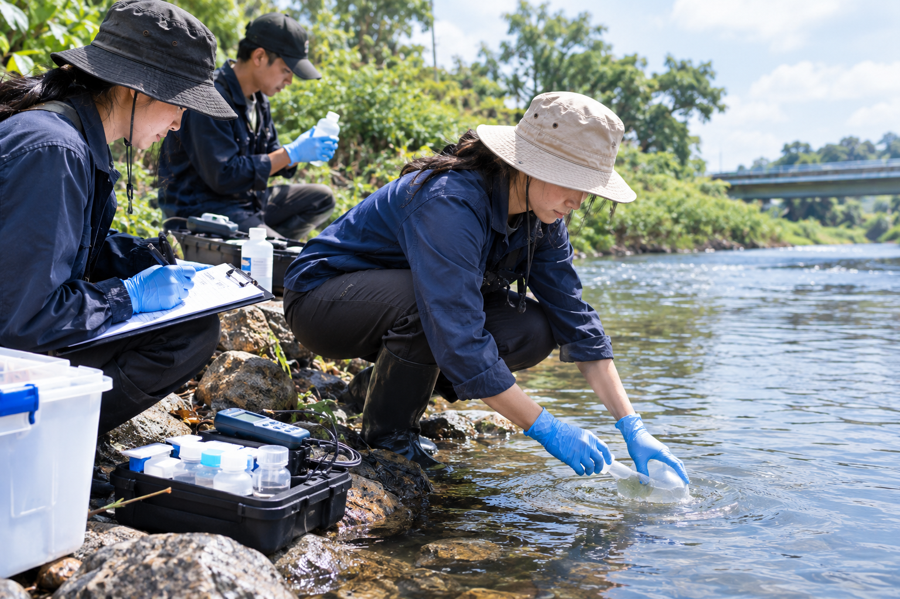
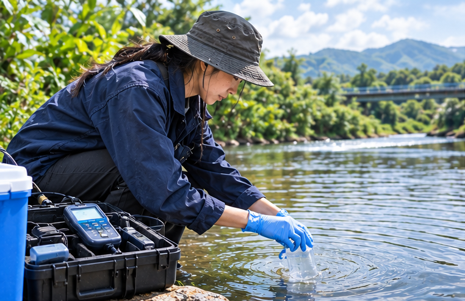
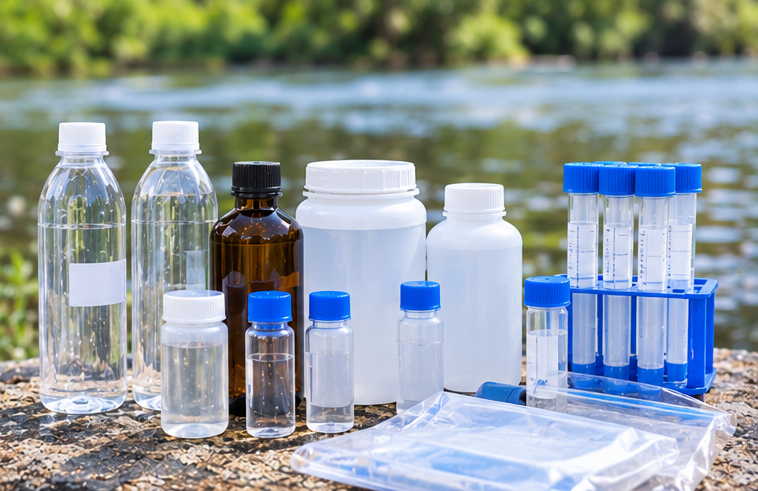
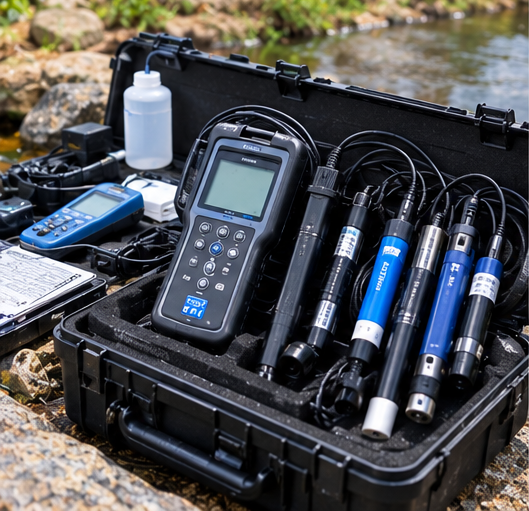
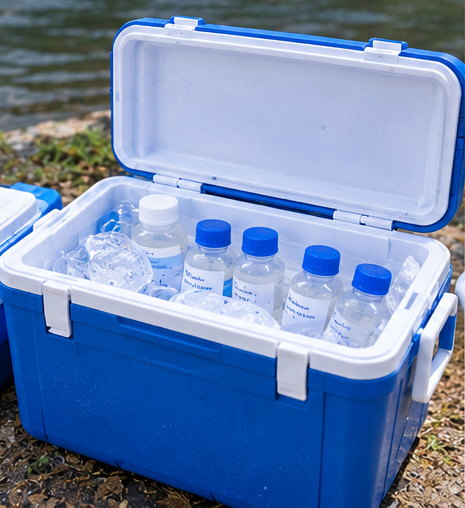
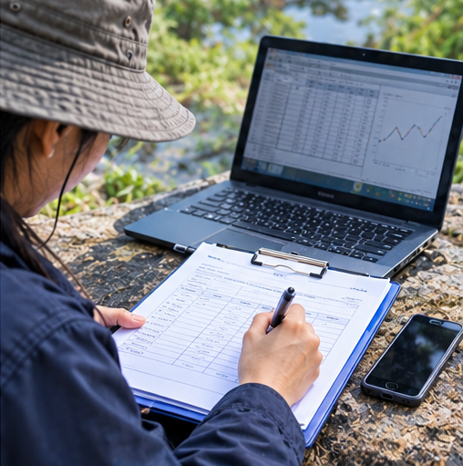

การวางแผนและเตรียมตัวก่อนสำรวจ
ก่อนลงพื้นที่ต้องกำหนดวัตถุประสงค์ให้ชัดเจน เช่น ต้องการศึกษาคุณภาพน้ำในแม่น้ำ คลอง หนอง หรือแหล่งน้ำที่อยู่ใกล้ชุมชน จากนั้นศึกษาพื้นที่จากแผนที่และภาพถ่ายดาวเทียม เพื่อเลือกจุดสำรวจให้ครอบคลุมพื้นที่ โดยอาจแบ่งเป็นจุดอ้างอิงเหนือพื้นที่ศึกษา จุดที่มีกิจกรรมของมนุษย์หรือแหล่งระบายน้ำ และจุดปลายน้ำสำหรับประเมินผลกระทบสะสมและเปรียบเทียบสภาพน้ำอย่างเป็นระบบ
อุปกรณ์และเครื่องมือที่ต้องเตรียมพร้อม: เครื่องวัด pH, DO, อุณหภูมิ และ EC, ภาชนะเก็บตัวอย่างที่เหมาะสม, ฉลากกันน้ำ, ปากกา, กล่องเก็บความเย็น (Ice Box), GPS สำหรับบันทึกพิกัด และอุปกรณ์ป้องกันภัยส่วนบุคคล (PPE) เช่น ถุงมือและรองเท้าบูท

การเก็บตัวอย่างน้ำ

การเก็บตัวอย่างต้องคำนึงถึงความปลอดภัยและป้องกันการปนเปื้อน เพื่อให้ตัวอย่างเป็นตัวแทนของแหล่งน้ำมากที่สุด ก่อนเก็บควรบันทึกรหัสจุด พิกัด วันที่ เวลา สภาพอากาศ และลักษณะน้ำ เช่น สี กลิ่น ฟอง ตะกอน หรือสิ่งผิดปกติที่พบ
ขณะเก็บตัวอย่างควรเลือกตำแหน่งตามแผน ไม่กวนตะกอนโดยไม่จำเป็น และใช้ภาชนะให้ตรงกับการวิเคราะห์ หลังเก็บต้องปิดฝาให้สนิท ติดฉลากทันที และเก็บรักษาตามข้อกำหนดของพารามิเตอร์นั้น ๆ
ช่วงเวลาเก็บตัวอย่างขึ้นอยู่กับวัตถุประสงค์ หากต้องการเปรียบเทียบหลายจุด ควรเก็บในช่วงเวลาที่ใกล้เคียงกัน ส่วนการศึกษาผลจากฝนหรือการเปลี่ยนแปลงตามฤดูกาล ควรบันทึกสภาพฝนและการไหลของน้ำประกอบด้วย
การตรวจวัดคุณภาพน้ำ
การตรวจวัดภาคสนามช่วยให้ทราบคุณสมบัติของน้ำ ณ จุดสำรวจ ควรตรวจสอบและปรับเทียบเครื่องมือตามคู่มือผู้ผลิตก่อนใช้งาน รอให้ค่าที่แสดงมีความเสถียร และบันทึกผลพร้อมหน่วยทุกครั้ง
| พารามิเตอร์ | ความสำคัญ | สิ่งที่ควรคำนึงถึง |
|---|---|---|
| อุณหภูมิน้ำ | มีผลต่อสิ่งมีชีวิตและการละลายของออกซิเจน | บันทึกเวลาและวัดใกล้เคียงกับ DO |
| pH | แสดงความเป็นกรด–ด่างของน้ำ | ตรวจสอบการปรับเทียบเครื่องก่อนวัด |
| DO | แสดงปริมาณออกซิเจนที่ละลายในน้ำ | วัดภาคสนามโดยเร็วและบันทึกเวลาจริง |
| EC | สะท้อนความสามารถในการนำไฟฟ้าของน้ำ ซึ่งสัมพันธ์กับไอออนที่ละลายอยู่ | บันทึกหน่วยและอุณหภูมิ |
| ความขุ่น | แสดงระดับการกระเจิงของแสงจากอนุภาคในน้ำ | ใช้เครื่องมือและภาชนะที่สะอาด |
ช่วงเวลาใดเหมาะสำหรับตรวจ DO?
ค่า DO เปลี่ยนแปลงได้ตลอดวัน เพราะพืชน้ำและสาหร่ายสังเคราะห์แสงเมื่อมีแสง ขณะที่สิ่งมีชีวิตยังคงใช้ออกซิเจนในการหายใจ:
- ช่วงเช้าตรู่: DO อาจต่ำกว่าช่วงอื่น เนื่องจากไม่มีการสังเคราะห์แสงในเวลากลางคืน
- ช่วงบ่าย: DO อาจสูงขึ้น หากมีการสังเคราะห์แสงมากเพียงพอ
- หากต้องการศึกษาความเปลี่ยนแปลง: ควรวัดมากกว่าหนึ่งช่วงเวลา เช่น เช้าตรู่และช่วงบ่าย โดยใช้วิธีการและตำแหน่งที่เปรียบเทียบกันได้


ขวดเก็บตัวอย่างเลือกชนิดขวดตามรายการวิเคราะห์
เครื่องวัดภาคสนามเช่น pH, DO, อุณหภูมิ และ EC
กล่องเก็บความเย็นควบคุมอุณหภูมิและรักษาตัวอย่างการบันทึกผลและสรุปข้อมูล

หลังตรวจวัดควรตรวจสอบว่าข้อมูลทุกจุดครบถ้วน โดยบันทึกรหัสจุด วันที่ เวลา พิกัด สภาพอากาศ ค่าที่วัดได้ หน่วย และข้อสังเกต หากค่าผิดปกติควรตรวจสอบเครื่องมือและวัดซ้ำตามความเหมาะสม โดยเก็บค่าที่วัดได้จริงไว้ ไม่ปรับเปลี่ยนข้อมูลเพื่อให้ตรงกับค่าที่คาดหวัง
เมื่อนำข้อมูลมาวิเคราะห์ สามารถเปรียบเทียบคุณภาพน้ำระหว่างจุดสำรวจ ช่วงเวลา หรือฤดูกาล และนำเสนอด้วยตาราง กราฟ หรือแผนที่ได้ อย่างไรก็ตาม ความแตกต่างของค่าไม่ได้ยืนยันสาเหตุของปัญหาโดยตรง จึงควรพิจารณาร่วมกับสภาพแวดล้อมและข้อมูลอื่นที่เกี่ยวข้อง
ก่อนออกจากพื้นที่ควรตรวจนับอุปกรณ์ เก็บขยะและวัสดุที่เกิดจากการปฏิบัติงาน ตรวจสอบฉลากตัวอย่าง และส่งตัวอย่างไปวิเคราะห์ภายในระยะเวลาที่กำหนด
เช็กลิสต์ก่อนจบงาน
ตรวจสอบความครบถ้วนของข้อมูลและอุปกรณ์ก่อนสิ้นสุดการสำรวจ